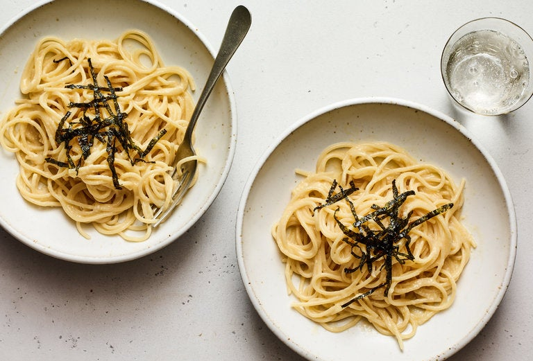

Miso Parmesan Pasta

Description
Quick and Easy Pasta Recipe.
Ingredients
- Kosher salt
- 16 ounces spaghetti, linguine or bucatini
- 6 tablespoons unsalted butter
- 3 tablespoons white (or red) miso
- 4 ounces Parmesan, finely grated (1 packed cup)
Steps
- Bring a large pot of salted water to a boil. Add the pasta and cook, stirring occasionally, until al dente. Reserve 1½ cups pasta water, then drain the pasta.
- Add the butter, miso and 1¼ cups pasta water to the pot and whisk over medium heat until miso breaks down and liquid is uniform, 1 to 2 minutes.
- Add the pasta and Parmesan and cook, stirring vigorously with tongs until cheese is melted and sauce emulsifies.
- Divide among shallow bowls and serve.